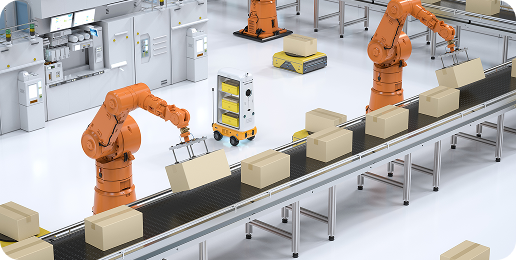
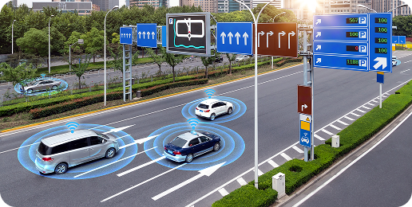
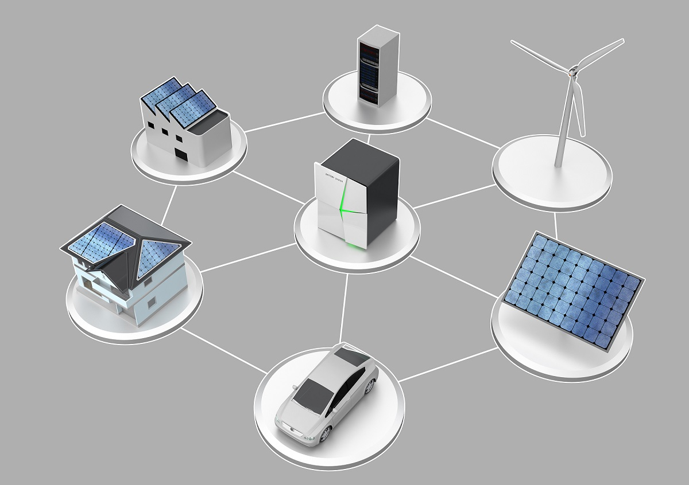

개념 학습
디지털 기술의 영향력
디지털 기술의 장점과 단점
| 디지털 기술 | 장점 | 단점 |
|---|---|---|
| 사물 인터넷 |
|
|
| 클라우드 |
|
|
| 디지털 기술 | 장점 | 단점 |
|---|---|---|
| 빅데이터 |
|
|
| 인공지능 |
|
|
디지털 기술이 융합·발전하고 정보를 쉽게 공유할 수 있게 되었으며, 산업이 자동화·단순화되면서 개인의 삶뿐만 아니라 우리 사회의 다양한 분야에 영향을 미치고 있다. 빠르게 발전하는 디지털 사회에서 안전하게 생활하기 위해서는 디지털 기술 발전이 가져올 긍정적인 변화와 디지털 기술로 인한 여러 가지 문제도 함께 대비할 필요가 있다.
디지털 기술로 변화하는 사회의 모습
교육
산업

교통

의료
문화·예술
금융
환경
